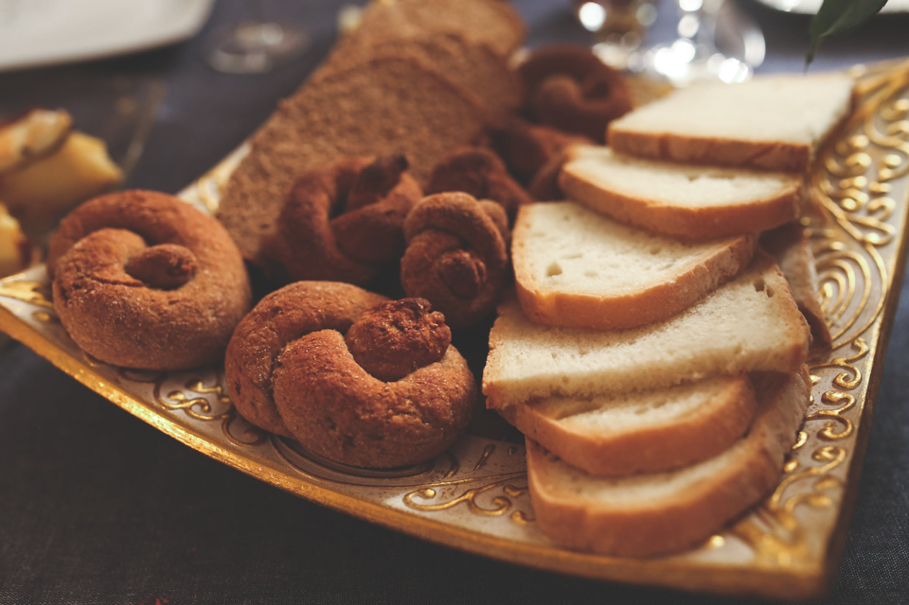

You start to meow quietly from under the stand and you hear a gasp come from above. The cloth hanging in front of you is quickly liffted up as a tall, dark woman with a hijab and wide eyes spots you. She squeaks, drops the cloth back down, rustles around a bit, and comes back with some bread. You happily take the food— success! If you meow louder, she might give you even more food. Or you could thank her first?